01JAN 26
啟程・直奔美人湯
桃園國際機場 → 新千歲空港 → 日本三大美人湯・十勝川溫泉
十勝川溫泉
以「美人湯」聞名——放眼全球，只有德國 BADEN 和日本十勝川擁有「植物性 MOOR 溫泉」。泉質含豐富植物精華與天然保濕成分，像天然的保養品，浸泡後肌膚光滑細緻，第一晚就把旅途的疲憊泡掉。
舞風家族 · 二〇二六 冬
2026.01.26 — 02.02
破冰船穿過鄂霍次克流冰，夜裡有冰瀑祭的燈——這個冬天，全家一起往北走
Flights
※ 以上為參考資訊，實際航班時間以航空公司最終確認為準
Highlights
壹
季節限定的鄂霍次克流冰奇觀，破冰前行的隆隆聲響只屬於冬天
貳
愛絲冰城、安藤忠雄水之教堂、森林露天溫泉一次走進
參
冰上釣公魚現炸天婦羅、香蕉船、雪上摩托車——冰湖上的一整天
肆
層雲峽冰瀑祭、支笏湖冰濤祭、阿寒湖冬華美，加上季節螃蟹御膳
Itinerary
桃園國際機場 → 新千歲空港 → 日本三大美人湯・十勝川溫泉
以「美人湯」聞名——放眼全球，只有德國 BADEN 和日本十勝川擁有「植物性 MOOR 溫泉」。泉質含豐富植物精華與天然保濕成分，像天然的保養品，浸泡後肌膚光滑細緻，第一晚就把旅途的疲憊泡掉。
釧路SL冬季濕原號 → 阿寒湖溫泉街散策・傳統愛努村落 → 阿寒湖冰上活動

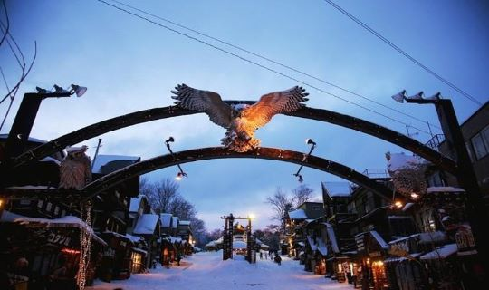

搭乘充滿懷舊風情的蒸汽火車，沿著釧路濕原緩慢前行。窗外是被白雪覆蓋的原野與靜謐的釧路川，幸運的話還能看見丹頂鶴翩翩起舞。車內溫暖如春，古典列車的煙霧與汽笛聲，勾勒出最具北海道韻味的冬日旅程。
又稱幸運之森商店街，是阿寒湖溫泉最熱鬧的一條街。街上可以買到北海道原住民愛努人的木雕、工藝品、特色圖騰手鍊項鍊，還有阿寒湖限定的綠藻球紀念品。
網走破冰船（季節限定） → 鄂霍次克流冰館 → 日本瀑布百選・銀河流星瀑布 → 層雲峽冰瀑祭
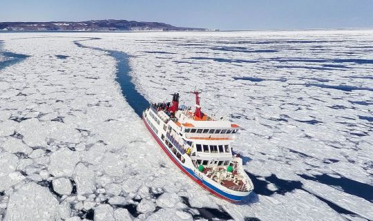
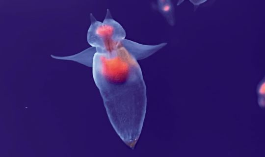

每年一月中旬起，黑龍江的淡水冰塊群從中俄邊界一路流進鄂霍次克海，從空中俯瞰是一條延綿千里的白色冰帶，直達北海道網走——可說是地理的奇觀。破冰船前進時陣陣隆隆聲響，勇往直前在一片銀色世界裡，彷彿來到與世無爭的世外桃源。
位於天都山山頂。一樓是攝氏零下 15 度的流冰體驗室，展示真正的流冰與流冰原上的動物標本，可以最近距離接觸流冰；頂樓的天都山展望台，一覽網走市街、鄂霍次克海與知床半島。
流星瀑布有如夜空中的流星快速奔流、氣勢雄偉，被稱為雄瀑布；銀河瀑布猶如白色絲絹細膩滑落、溫柔婉轉，被稱為雌瀑布——兩者並稱夫妻瀑布，皆入選日本瀑布百選。
夜間自行前往的期間限定冬祭典。會場上以嚴冬自然力量築成的冰製建築林立——震撼的冰柱、冰隧道、高達 15 公尺的冰製展望台，夜晚燈光打照其上，是與白天截然不同的夢幻氣氛。
期間限定 預計 2026/01/25 — 03/14※ 流冰平均每年約 1 月中至 3 月下旬抵達網走，受天氣、溫度、洋流影響可能提早或延後（或改前往紋別破冰船）。若因風雪過大、氣候或船隻故障等不可抗力無法搭乘，退費 2,000 日圓／人，並改前往北見狐狸村，敬請諒解。
大雪山旭岳纜車 → 一生必看絕景・白金青池 → 星野TOMAMU渡假村（愛絲冰城／水之教堂／木葉之湯）
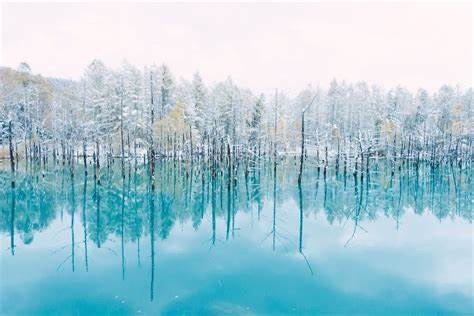
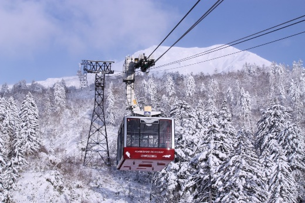

旭岳是北海道最高峰、大雪山國立公園的核心。纜車緩緩上升，整片雪白的原始山林與冰封樹海在眼前展開，彷彿穿越雲層俯瞰銀白世界；天氣晴朗時，還能看見霧氣裊裊的地熱噴氣口，感受大自然的磅礡力量。
修建美瑛防災河堤時偶然形成的池塘，四季各有面貌——深冬時分，結冰的池面讓整個區域化作白色仙境，是一生必看的絕景。
北海道最具代表性的頂級渡假村，佔地相當於 213 個東京巨蛋。在此體驗結合藝術與自然的冬季奇幻世界——
星野TOMAMU・霧冰平台 → 北海道中央葡萄酒工廠 → 支笏湖溫泉


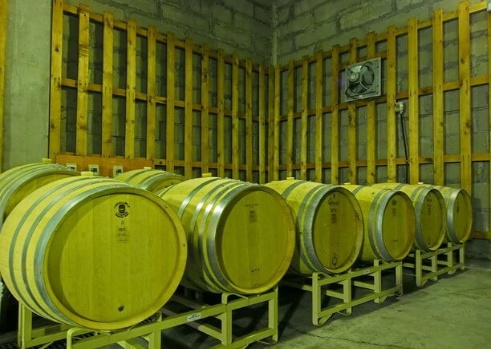
從山麓搭乘雲海纜車直達霧冰平台，眺望結著冰、閃著純白光輝的樹木與壯麗的日高山脈。冬季限定的「霧冰」，是寒氣與濕氣交織後凝結於樹梢的自然奇蹟。
冬季開放 預計 12/01 — 03/31・實際以官網公告為準千歲酒莊成立於 1988 年，在涼爽的北方氣候中孕育葡萄酒——在冰天雪地的北海道，品一杯當地釀的美味。
支笏湖冰濤祭 → 小樽運河散策（北一硝子館・歐風蒸氣鐘・音樂盒堂） → 小樽三角市場 → 狸小路自由散策
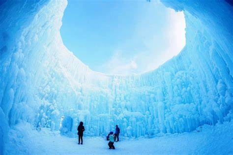

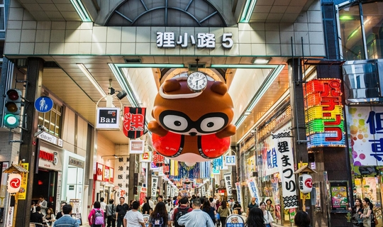
北海道一年一度的大型冬祭典，以支笏湖湖水凍成的大小冰像林立會場，白天透著支笏湖藍、入夜點燈後如夢似幻。
期間限定 預計 2026/01/31 — 02/23小樽運河開鑿於 1914 年，全長 1,140 公尺，沿岸紅磚倉庫與銀行林立——當年作為煤炭輸出商港，曾被稱為「北方的華爾街」，如今是最具風情的歷史街區。
緊鄰小樽車站的三角市場，狹長巷道滿是帝王蟹、海膽、甜蝦與干貝的香氣，可在食堂享用現點現做的海鮮丼。傍晚回到札幌，逛開設於 1873 年、全長約 900 公尺的狸小路商店街——藥妝、美食、伴手禮應有盡有。
全日自由活動 → 晚間螃蟹御膳（推薦：北海道舊道廳・二條市場・大通公園）
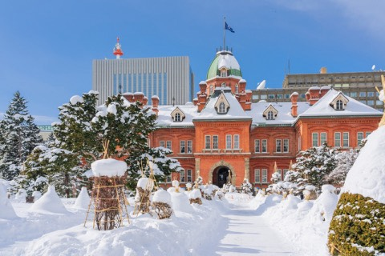
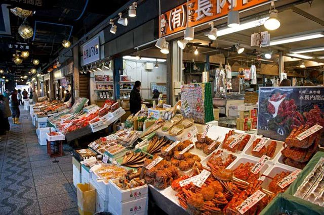
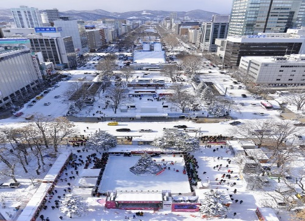
依個人喜好自由探索——悠閒漫步札幌街頭，品嚐甜點與咖啡，往百貨商圈、藥妝店尋寶，或靜靜欣賞雪花飄落的街景，享受北海道最純粹的冬日慢時光。推薦走訪札幌二條市場與北海道舊道廳。
晚上回到團隊，享用季節螃蟹御膳——這一餐，留給北國的蟹。
三井OUTLET PARK 札幌北廣島 → 新千歲空港 → 桃園國際機場
回程前的最後採買。抵達新千歲空港後辦理退稅與登機手續，享用機場美食或選購伴手禮，搭乘直飛班機返回台北——結束這一段冰與雪的北國旅程。
團費、房型與報名細節，請洽您的角落旅行社承辦人
舞風家族專屬行程・2026.01.26 出發